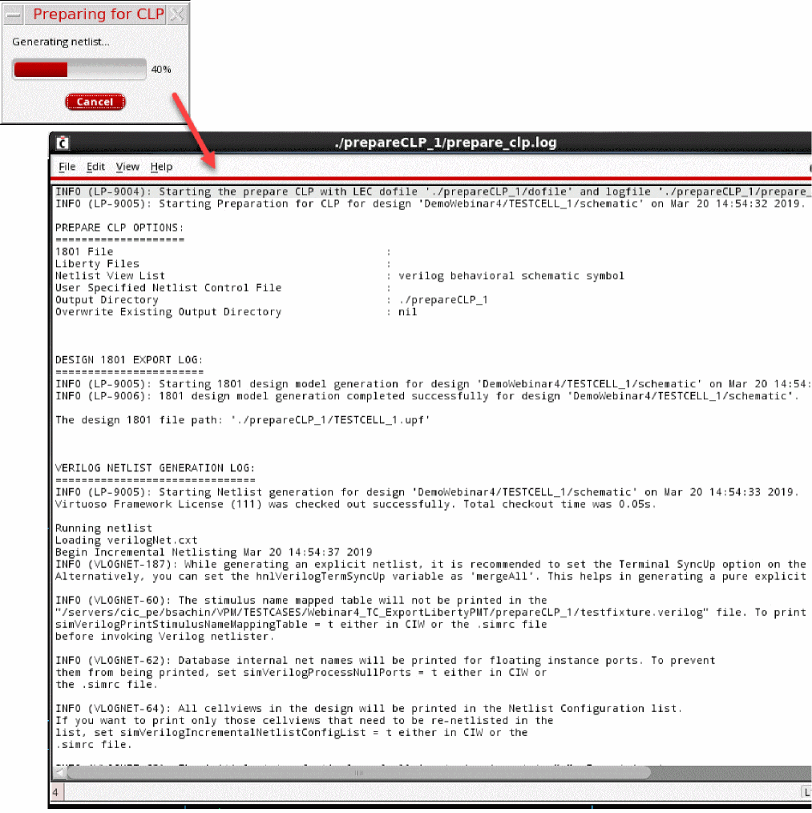
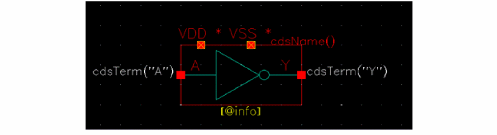

7
Verifying Power Intent of a Design
After completing the power intent specification for your design, you need to verify the correctness of the power intent as per the design. When you verify the design by using Power Manager, the tool automatically runs CLP that reads the power intent and generates a report with appropriate messages.
The chapter includes the following sections:
- Preparing and Running CLP
- Checking Design Hierarchy
- Checking Power Intent
- Power Intent Verification Requirements
Preparing and Running CLP
Ensure that the following setup is done before you start verification using CLP:
- You have set the license for the Mixed-signal Option to Conformal Low Power (95127).
-
You have set the path to the binary file of CLP,
lec, in the UNIX path. - You have checked the design hierarchy and ensured that there are no errors in the design. For more details about the recommended checks to be done, refer to Checking Power Intent.
- You have checked the power intent of the design to ensure its completeness. For more details about checking the completeness of power intent, refer to Checking Power Intent.
-
You have defined the reference Verilog and Liberty files by including
read librarystatements in the dofile (a file with set of commands required as inputs for power intent verification). This ensures that Conformal Low Power does not report the missing reference libraries. For more information on Conformal Low Power, refer to Conformal Low Power User Guide.
To verify the power intent, click Power Manager – Run CLP if you already have the required dofiles.
Otherwise, before running the CLP, use Prepare CLP to generate the 1801 file, Verilog netlist, and CLP dofile at the specified path.
- 1801 File - This field is optional and only required if you want the tool to use a specific 1801 file for the CLP run. If the field is blank, you need to first extract the power intent to ensure that a new 1801 file is available to be exported and placed in the prepareCLP form.
- Liberty Files - This field is optional and only required if you want to include a Liberty file that is not a part of the setup. If the setup already has all the required Liberty files, these files are referred from the setup.
- Netlist Control File - Specify a control file for netlisting. This file contains flags used for netlist customization. The netlist customizations ensure that the power or ground information is available in the netlist in the desired format.
- Netlist View List- Specify a user switch view name list that is to be used for netlisting for the hierarchical designs.
- Output Directory- Specify the path to store a 1801 file, netlist, and dofile.
- Overwrite Existing Directory- Select this check box if you want to overwrite the existing output directory. If this option is deselected, the output directory is created with a unique name on each successive run.
The netlist generated by Prepare CLP is different from the general netlist created by NC-Verilog. This netlist includes a list of Verilog stub views for the macro models, single supply analog modules along with their power and ground pins, and the blocks that are binded to the existing power intent (1801). This makes the netlist more compatible with CLP. The log file generated, after the preparations for the CLP run are over, displays the results along with the following details:
- Date and time
- Design details
- Form field values
- Netlist/1801/dofile file paths
- Netlist error/warnings
- The ‘si.env’ file used for netlisting
- CLP log file path
-
The CLP Run command for command line

Then, click Run CLP to start CLP and use the files created during CLP preparation, for power verification. The CLP run initiates when you click OK.
- dofile Path - Specify the path of the dofile.
- Run Directory - Specify the CLP run directory. The default value for this field is the current working directory.
This two-step process, which includes preparing for CLP and running CLP, lets you check the input files and resolve issues, if any, before proceeding for the CLP run. You can also run CLP from Power Manager by specifying a run directory and a CLP dofile. In addition, you can run CLP from the command line once the input files are generated using Power Manager.
After the verification is complete, the generated report is displayed in a separate log window as shown below.
Checking Design Hierarchy
Before verifying the power intent for your design, it is recommended that you check the connectivity information in the design hierarchy by choosing Check – Hierarchy. The Check Hierarchy form is displayed. Select the appropriate check options on this form and click OK.
Checking Power Intent
Power intent can be defined as incomplete in any of the following scenarios:
- Incomplete power domains
- Incomplete low power rules
- Incomplete low power cells
- Missing off conditions
- Missing power modes
- Unmapped ports of the design—All ports of the design must either belong to a power domain, floating ports, or feed-through port list, or the power intent is treated as incomplete
- Unmapped supply nets in the design—All supply nets must be a part of some power domain (either as direct Power/Ground net or as equivalent power/ground net), or the power intent is treated as incomplete
Power Intent Verification Requirements
The accurate power intent verification using CLP has the following mandatory requirements before proceeding for preparing and subsequently running CLP.
-
cmos_sch,schematic, orVerilog_PG(Non-text) required as stop views for PDK cells (Standard/Special cells).-
If
cmos_sch,schematic, orVerilog_PG(symbol) exists with power and ground pins, they can be consumed as it is.
A Verilog symbol view with the PG information is illustrated below.
 -
If
-
A netlist control file having flags for specific netlist customizations.
If you explicitly specify a netlist control file during preparation for running CLP, set the following flags appropriately:- To ensure that the power and ground information is correctly captured in the netlist. This is required for correct power intent verification of the design.
-
To ensure that redundant information does not show at the module or instance level in the netlist. For example, information of primitive devices (mos/resistor/capacitors and diodes).
hnlUserIgnoreCVList -
For creating the stub view (no module definition) for macro Liberty blocks, just an instance line with power/ground nets that is identified by traversing the schematic.
hnlUserStubCVList
For more information about the flags used for netlist customization, refer to Virtuoso NC Verilog Environment User Guide and Open Simulation System Reference.
Return to top